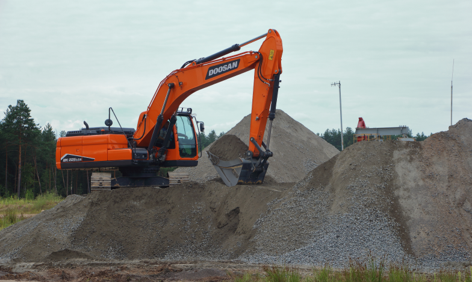
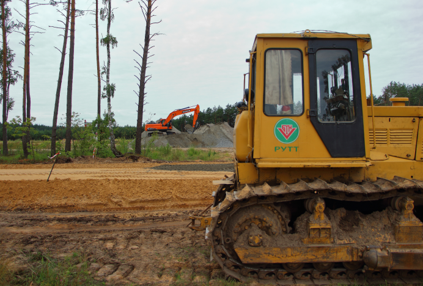
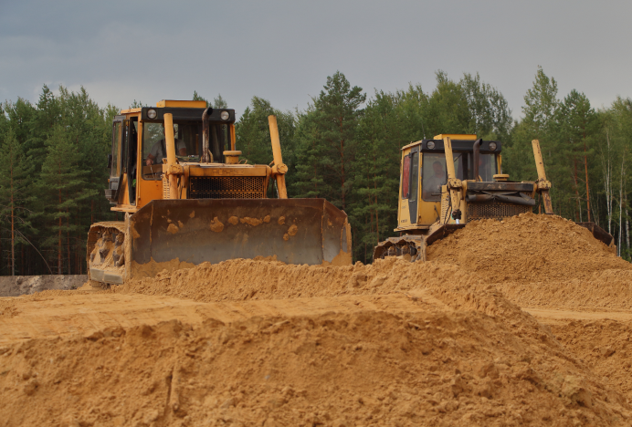
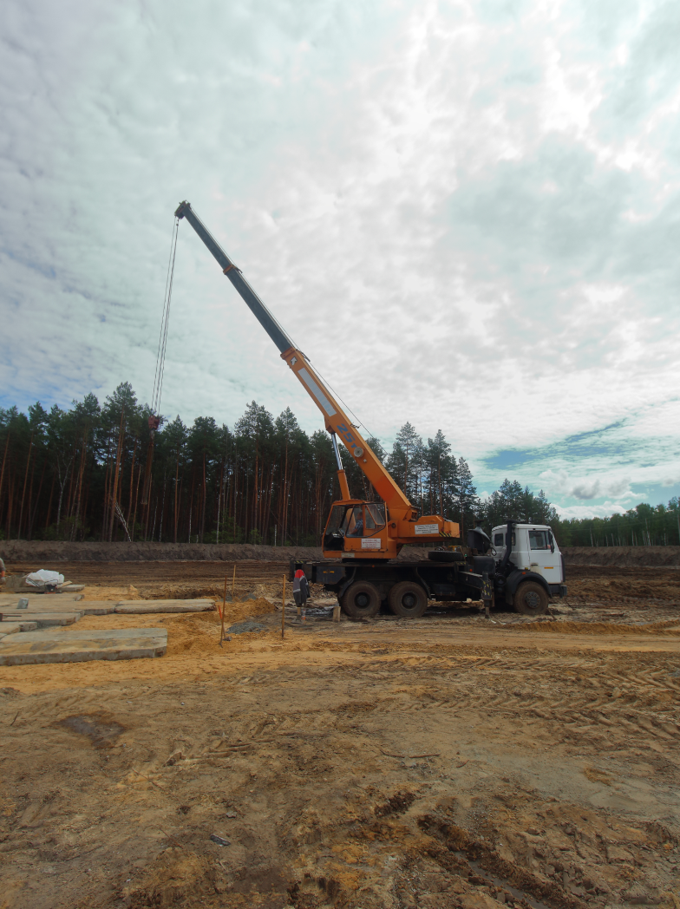
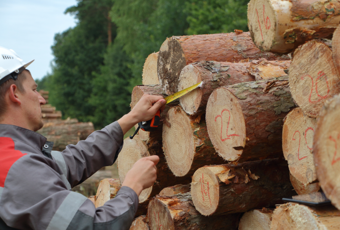
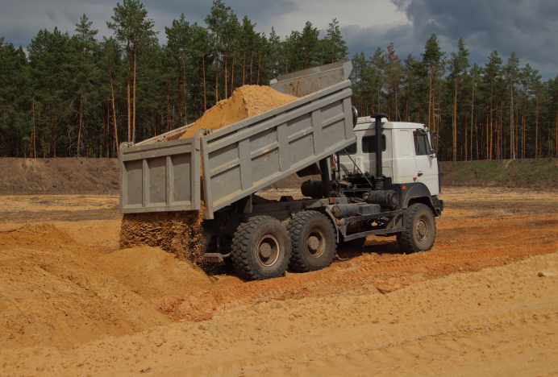
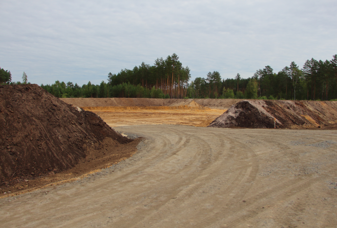
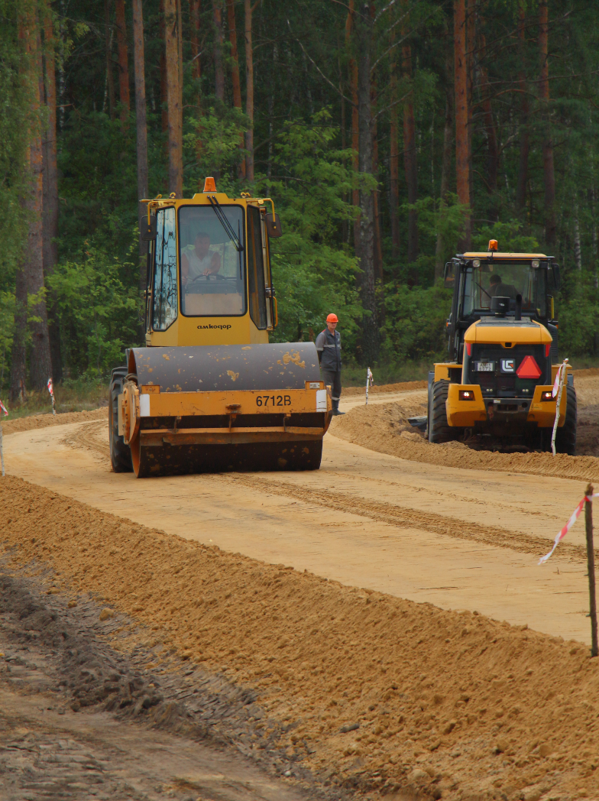
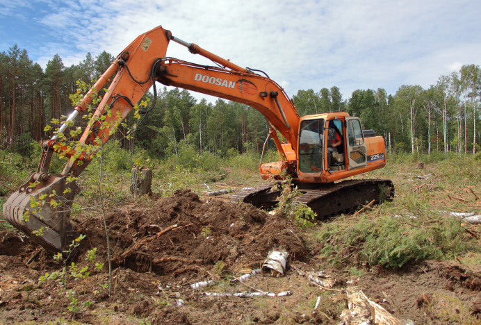

подготовка
площадок
С 2019 года в управлении образовано новое структурное подразделение — цех подготовительных работ. Основной задачей цеха подготовительных работ является выполнение работ по подготовке площадок и подъездных дорог под строящиеся объекты нефтедобычи. Работники цеха выполняют весь комплекс работ по подготовке площадок для строительства буровых установок: валка леса, корчевание пней, отсыпка площадки, устройство обваловования, автоподъездов и другие мероприятия. С момента образования цеха подготовлено и сдано заказчикам 273 площадки для строительства буровых установок и восстановления нефтяных скважин. Произведена вырубка деревьев в количестве 126 007 м³. При устройстве площадок отсыпано 1 189 000 м³ карьерного грунта и построено 52,9 км временных дорог.

Работники цеха принимали активное участие в реализации Дорожной карты по разработке нефтеперспективных комплексов Южной зоны Припятского прогиба, выполняя работы по строительству объектов на территориях, пострадавших от аварии на Чернобыльской АЭС, в том числе на территории Полесского государственного радиационно-экологического заповедника.



С 2021 года цех подготовительных работ приступил к монтажу фундаментов под установки повышенной грузоподъемности более 100т (АРС-225, АРС-250) и площадок для расстановки технологического оборудования для проведения операций МГРП по технологии Plug&Perf. Созданы звенья по расчистке трасс и рубке опасных деревьев для предотвращения случаев отключения воздушных линий электропередач в результате падения деревьев. Объем удаленных аварийных деревьев составляет 9 776 м³.




